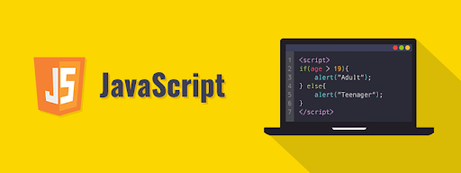

JavaScript
JavaScript?
JavaScript(JS)는 가벼운 인터프리터 또는 JIT 컴파일 프로그래밍 언어로, 일급 함수를 지원합니다. 웹 페이지의 스크립트 언어로서 제일 유명하지만 Node.js, Apache CouchDB, Adobe Acrobat처럼 많은 비 브라우저 환경에서도 사용하고 있습니다. JavaScript는 프로토타입 기반의 동적 다중 패러다임 스크립트 언어로, 객체지향형, 명령형, 선언형(함수형 프로그래밍 등) 스타일을 지원합니다. 자세한 내용은 JavaScript에 대하여를 참고하세요.
Basic concept
JavaScript는 동적으로 컨텐츠를 바꾸고, 멀티미디어를 다루고, 움직이는 이미지 그리고 꽤나 많은 다른 일(물론, 전부는 아니지만 몇 줄만의 자바스크립트 코드로 얻는 결과는 놀라울겁니다.)들을 할 수 있는 스크립트 언어입니다.
History
1995년, 그 당시의 웹브라우저 시장은 넷스케이프 사의 네비게이터가 지배하고 있었습니다. 하지만 초기의 웹은 변화하지 않는 정적인 글자로 꾸며진 HTML 페이지였고, 넷스케이프 사는 가벼운 프로그램 언어를 통해 HTML 페이지에 움직임을 주고 싶어 프로그램 언어를 추가하기로 결정했습니다. 그래서 Brendan Erich(브랜든 아이크)를 고용했는데, 그는 무려 10일 만에 언어를 완성했습니다.
처음에는 "JavaScript"가 아닌 "Mocha"라는 이름을 붙였습니다. 하지만 그해 9월, "LiveScript"라는 이름으로 바뀌었고 또다시 같은 해 12월, "JavaScript"로 최종 결정되었습니다. 'Java와 구문이 유사해서 이름을 JavaScript로 지었다'는 표면상의 이유고, 당시 Java의 유명세를 이용해 마케팅 차원에서 의도적으로 지은 것입니다. 앞서 말했듯이 이름은 유사하지만, 전혀 다른 언어입니다.